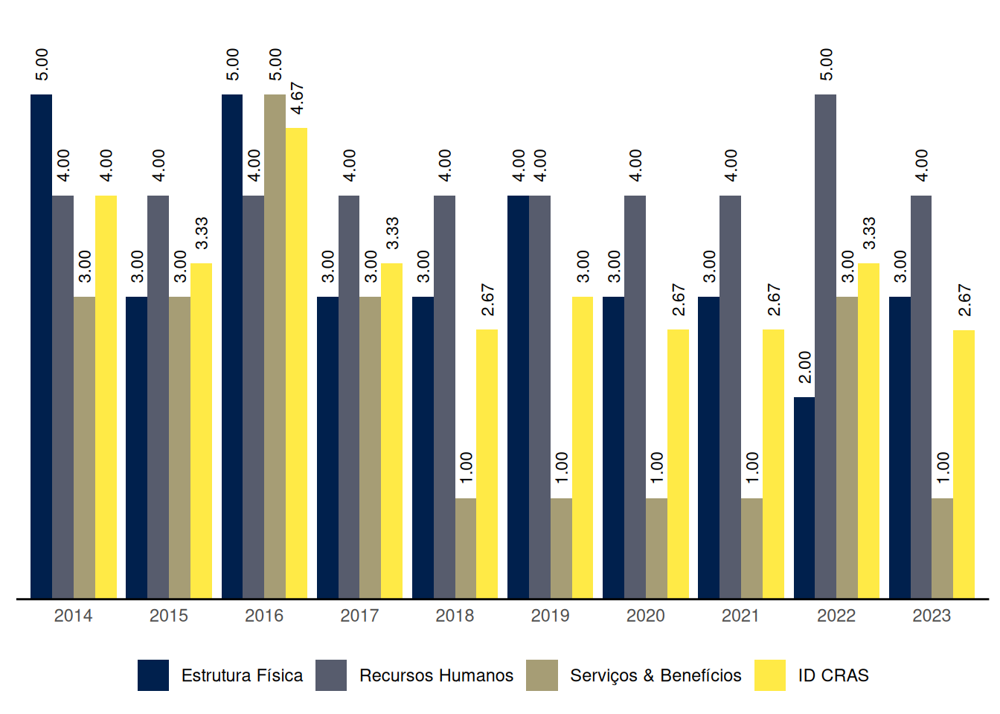

Chalé
Relatório de Indicadores Censo SUAS 2023 do município de Chalé, Minas Gerais
1 ID CRAS: Índice de Desenvolvimento do CRAS
O ID CRAS é um indicador sintético que retrata o grau de desenvolvimento do CRAS. Ele é composto por três dimensões: Estrutura Física, Recursos Humanos e Serviços & Benefícios. Em cada dimensão é atribuída uma nota de 1 a 5 de acordo com critérios indicativos do nível de desenvolvimento do CRAS, sendo 5 o nível máximo de desenvolvimento. O ID CRAS é a média das notas alcançadas nas três dimensões.
O Gráfico 1 mostra a evolução das médias do ID CRAS ao longo dos anos no município de Chalé, Minas Gerais.
| Capacidade de até: | Quantidade |
|---|---|
| 2.500 famílias referenciadas | 1 |
| 3.500 famílias referenciadas | 0 |
| 5.000 famílias referenciadas | 0 |
As seções a seguir apresentam os resultados do município de Chalé em cada uma das dimensões do ID CRAS, bem como os requisitos para se alcançar os níveis superiores.
1.1 ID CRAS: Dimensão Estrutura Física
1.1.1 CRAS com capacidade de referenciamento para até 2.500 ou 3.500 famílias
Na dimensão Estrutura Física, o nível de ID do CRAS com capacidade de referenciamento para até 2.500 ou 3.500 famílias no município de Chalé é 3.
O CRAS de nível 3, com capacidade de referenciamento para até 2.500 ou 3.500 famílias, na dimensão Estrutura Física:
- Possui recepção; e
- Possui no mínimo 2 salas de atendimento; e
- Possui pelo menos 1 banheiro; e
- Possui acessibilidade, ao menos parcial.
Para alcançar o nível 4 na dimensão Estrutura Física, o CRAS com capacidade de referenciamento para até 2.500 ou 3.500 famílias precisa, além dos resquisitos do nível 3:
- Possuir pelo menos 1 das salas de atendimento com capacidade para 15 ou mais pessoas; e
- Possuir no mínimo 2 banheiros; e
- Possuir pelo menos 1 computador conectado à internet.
1.1.2 CRAS com capacidade de referenciamento para até 5.000 famílias
Chalé não tem CRAS com capacidade de referenciamento para até 5.000 famílias.
1.2 ID CRAS: Dimensão Recursos Humanos
1.2.1 CRAS com capacidade de referenciamento para até 2.500 famílias
Na dimensão Recursos Humanos, o nível de ID do CRAS com capacidade de referenciamento para até 2.500 famílias no município de Chalé é 4.
O CRAS de nível 4, com capacidade de referenciamento para até 2.500 famílias, na dimensão Recursos Humanos:
- Possui no mínimo 4 (7, se EV) profissionais, sendo pelo menos 3 (5, se EV) com nível superior; e
- Possui no mínimo 1 Assistente Social (2, se EV); e
- Possui coordenador com nível superior.
Para alcançar o nível 5 na dimensão Recursos Humanos, o CRAS com capacidade de referenciamento para até 2.500 famílias precisa, além dos requisitos do nível 4:
- Possuir no mínimo 5 (9, se EV) profissionais (sendo pelo menos 3 (5, se EV) com nível superior); e
- Possuir no mínimo 1 Psicólogo; e
- Possuir no mínimo 1 profissional de nível superior com vínculo estatutário ou empregado público celetista.
1.2.2 CRAS com capacidade de referenciamento para até 3.500 famílias
Chalé não tem CRAS com capacidade de referenciamento para até 3.500 famílias.
1.2.3 CRAS com capacidade de referenciamento para até 5.000 famílias
Chalé não tem CRAS com capacidade de referenciamento para até 5.000 famílias.
1.3 ID CRAS: Dimensão Serviços & Benefícios
Na dimensão Serviços & Benefícios, o nível de ID do CRAS no município de Chalé é 1.
O CRAS de nível 1 na dimensão Serviços & Benefícios em município de porte Pequeno I:
- Não realiza alguma(s) das seguintes atividades essenciais do PAIF: acompanhamento de famílias, e/ou grupo/oficina com famílias, e/ou visitas domiciliares, e/ou orientação; ou
- Possui articulação frágil ou inexistente com os Serviços de Educação e com os Serviços de Saúde; ou
- Não possui profissionais de Serviço Social nem de Psicologia.
Para alcançar o nível 2 na dimensão Serviços & Benefícios, o CRAS em município de porte Pequeno I precisa:
- Executar o PAIF, realizando no mínimo as seguintes atividades: acompanhamento de famílias, grupo/oficina com famílias e visitas domiciliares; e
- Possuir forte articulação com pelo menos um dos seguintes Serviços: Serviços de Educação e Serviços de Saúde.
2 ID CREAS: Índice de Desenvolvimento do CREAS
O ID CREAS é um indicador sintético que retrata o grau de desenvolvimento do CREAS. Ele é composto por três dimensões: Estrutura Física, Recursos Humanos e Serviços & Benefícios. Em cada dimensão é atribuída uma nota de 1 a 5 de acordo com critérios indicativos do nível de desenvolvimento do CREAS, sendo 5 o nível máximo de desenvolvimento. O ID CREAS é a média das notas alcançadas nas três dimensões.
Chalé não tem CREAS.